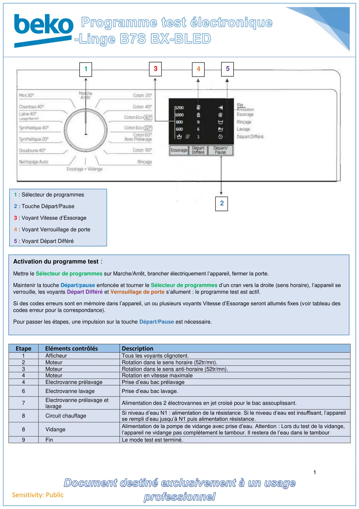
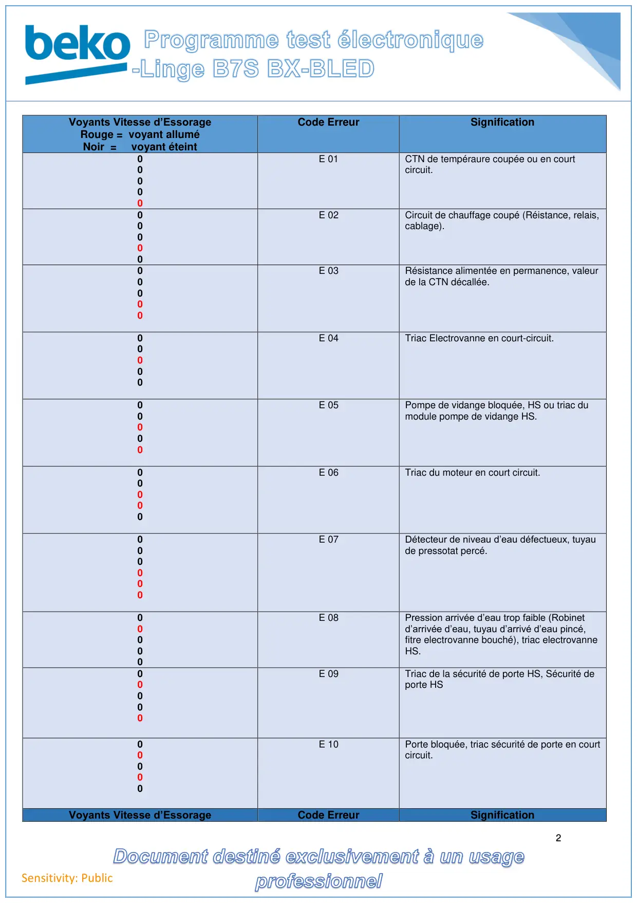
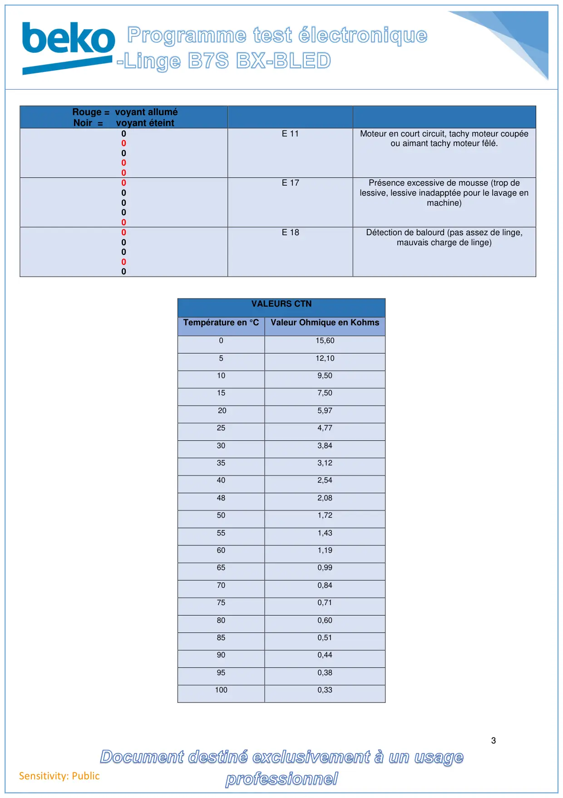

Progr Test lave linge Electronique B7S BLED

1Sensitivity: PublicEtapeEléments contrôlésDescription1AfficheurTous les voyants clignotent.2MoteurRotation dans le sens horaire (52tr/mn).3MoteurRotation dans le sens anti-horaire (52tr/mn).4MoteurRotation en vitesse maximale4Electrovanne prélavagePrise d’eau bac prélavage6Electrovanne lavagePrise d’eau bac lavage.7Electrovanne prélavage etlavageAlimentation des 2 électrovannes en jet croisé pour le bac assouplissant.8Circuit chauffageSi niveau d’eau N1 : alimentation de la résistance. Si le niveau d’eau est insuffisant, l’appareilse rempli d’eau jusqu’à N1 puis alimentation résistance.8VidangeAlimentation de la pompe de vidange avec prise d’eau. Attention : Lors du test de la vidange,l’appareil ne vidange pas complètement le tambour. Il restera de l’eau dans le tambour9FinLe mode test est terminé.132Activation du programme test :Mettre le Sélecteur de programmes sur Marche/Arrêt, brancher électriquement l’appareil, fermer la porte.Maintenir la touche Départ/pause enfoncée et tourner le Sélecteur de programmes d’un cran vers la droite (sens horaire), l’appareil severrouille, les voyants Départ Différé et Verrouillage de porte s’allument : le programme test est actif.Si des codes erreurs sont en mémoire dans l’appareil, un ou plusieurs voyants Vitesse d’Essorage seront allumés fixes (voir tableau descodes erreur pour la correspondance).Pour passer les étapes, une impulsion sur la touche Départ/Pause est nécessaire.41 : Sélecteur de programmes2 : Touche Départ/Pause3 : Voyant Vitesse d’Essorage4 : Voyant Verrouillage de porte5 : Voyant Départ Différé5
1 / 3
2Sensitivity: PublicVoyants Vitesse d’EssorageRouge = voyant alluméNoir = voyant éteintCode ErreurSignification00000E 01CTN de tempéraure coupée ou en courtcircuit.00000E 02Circuit de chauffage coupé (Réistance, relais,cablage).00000E 03Résistance alimentée en permanence, valeurde la CTN décallée.00000E 04Triac Electrovanne en court-circuit.00000E 05Pompe de vidange bloquée, HS ou triac dumodule pompe de vidange HS.00000E 06Triac du moteur en court circuit.000000E 07Détecteur de niveau d’eau défectueux, tuyaude pressotat percé.00000E 08Pression arrivée d’eau trop faible (Robinetd’arrivée d’eau, tuyau d’arrivé d’eau pincé,fitre electrovanne bouché), triac electrovanneHS.00000E 09Triac de la sécurité de porte HS, Sécurité deporte HS00000E 10Porte bloquée, triac sécurité de porte en courtcircuit.Voyants Vitesse d’EssorageCode ErreurSignification
2 / 3
3Sensitivity: PublicRouge = voyant alluméNoir = voyant éteint00000E 11Moteur en court circuit, tachy moteur coupéeou aimant tachy moteur fêlé.00000E 17Présence excessive de mousse (trop delessive, lessive inadapptée pour le lavage enmachine)00000E 18Détection de balourd (pas assez de linge,mauvais charge de linge)VALEURS CTNTempérature en °CValeur Ohmique en Kohms015,60512,10109,50157,50205,97254,77303,84353,12402,54482,08501,72551,43601,19650,99700,84750,71800,60850,51900,44950,381000,33
3 / 3